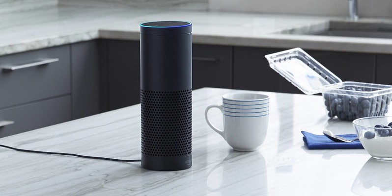

¿Qué se puede hacer con Amazon Alexa?

Alexa es el asistente virtual de Amazon surgido como respuesta a empresas como Apple y Google,
responde a comandos de voz y es compatible con una gran cantidad de dispositivos, en esta
sección te explicamos que puedes hacer con Alexa.
Como ya se menciono anteriormente Alexa es un asistente virtual comandado por voz y es creado
por Amazon, este asistente viene integrado en varios dispositivos vendidos por Amazon como lo
son su linea de altavoces inteligentes Echo. En su nucleo, Alexa es un servicio de voz ubicado
en la nube de Amazon, se integra a los dispositivos vendidos por amazon y con los de terceros,
quizas esto último sea una de las razones por la que multiples fabricantes han volteado a ver
al ecosistema domótico de Amazon.
Alexa Voice Service (AVS), es la solucion ofrecida por Amazon para integrar su asistente virtual
en tus productos. Este servico prporciona la capacidad de un control por voz manos libres
a cualquier dispositivo conectado. Esta caracteristica esta dirigida a los fabricantes y es una de
las razones por las que estos últimos se han interesado en este ecosistema.
Otras de las opciones que ofrece Alexa es la capacidad de añadir funcionalidades, algo denominado
por Amazon como "Skills" con la ayuda del conjunto de herramientas conocido como Alexa Skills Kit
(ASK), que contiene ademas de las herramientas de desarrollo documentación, muestras de codigo y
API en self-service.
En cuanto a las funcionalidades tenemos dos tipos, pos si mismo Alexa integra comandos de voz que
incluyen una gran variedad de peticiones. Posteriormente tenemos las "Skills" complementarias que
puedes añadir para agregar mas funcionalidad.
Dispositivos compatibles con Alexa
Como ya se ha mencionado, existen dos tipos de dispositivoss, los que integran alexa, es decir,
pueden servir como centro de control y los que son compatibles con Alexa, en esta sección nos
centraremos en estos ultimos.
Los productos compatibles mas comunes son focos inteligentes, es posible encontrar una gran variedad
tanto de fabricantes como de modelos, tambien tenemos camaras de seguridad como uno de los mas
variados, cerraduras, termostatos, bocinas y un largo etcetera.
Todo lo anterior se puede revisar rapidamente desde su web oficial, cabe recalcar que muchos de los productos
no son de marcas reconocidas pero si es posible encontrar sobre todo en los últimos años marcas mas populares.